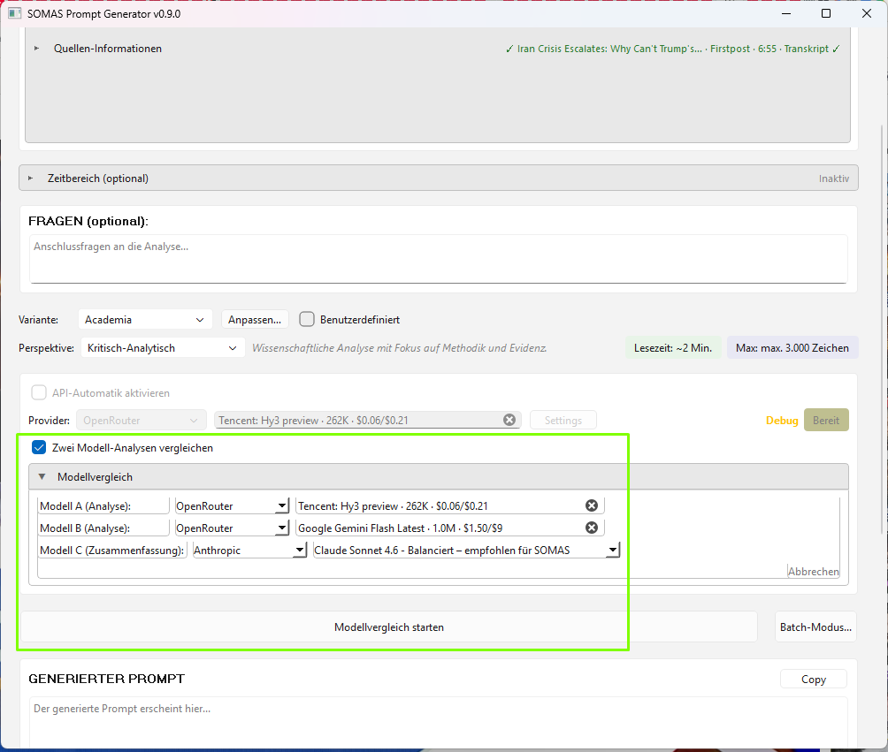

Strukturierte YouTube-Analysen mit KI-Power.
200+ Modelle · Ein Klick · LinkedIn-ready.
✨ v0.8.0: Custom Prompt Editor · 4 API-Provider · Batch-Modus · Benutzerdefinierte Presets

Von YouTube-URL zur fertigen Analyse – vollautomatisch oder manuell
Volle Kontrolle über den Prompt – anpassen, speichern, wiederverwenden.
System-Prompt vor der Generierung anpassen: Rollenanweisung editieren, Modul fixieren. Benutzerdefinierte Anweisungen werden dem Template vorangestellt.
Prompt-Kontrolle · Modul-OverrideNach jeder API-Analyse wird das angepasste Preset automatisch gespeichert. Umbenennen und Löschen per Rechtsklick, Toggle zwischen Standard und eigenen Presets.
Auto-Save · UPSERT · JSON-PersistenzEines der 6 Module fest vorgeben – das Modell muss genau dieses verwenden. Anti-Monotonie wird automatisch unterdrückt wenn ein Pflicht-Modul gesetzt ist.
PFLICHT-MODUL · gezielt steuernNeuer Titel in LinkedIn- und Markdown-Exporten: „Analyse · SOMAS" statt „SOMAS-Analyse" für ein klareres Branding.
LinkedIn · Markdown · konsistentMehr Videos auf einmal, mehr Provider ohne Umwege.
2–5 YouTube-URLs in einem Durchlauf analysieren. Non-modaler Dialog, Tab-basierte Ergebnisse, integrierte Bewertung pro Video.
Sequenziell · Crash-resistentClaude Opus 4.6, Sonnet 4.6, Haiku 4.5 – direkt über die Anthropic Messages API, ohne OpenRouter-Umweg.
Native SDK · console.anthropic.comGPT-4o, GPT-4o mini, o3, o4-mini – über die Chat Completions API mit nativem SDK.
Standard-API-Key · 4 ModellePerplexity (Web-Search), OpenRouter (200+ Modelle), Anthropic (direkt), OpenAI (direkt) – alle in einer App.
Freie Wahl · ein InterfaceDrei orthogonale Steuerungsachsen – Preset, Perspektive, Modul.
Neutral-Deskriptiv, Kritisch-Analytisch oder Empathisch-Rekonstruktiv. Pro Preset ein Default, jederzeit überschreibbar.
Drei Haltungen · formatbewusstSUBTEXT dekodiert implizite Botschaften. FAKTENCHECK priorisiert überprüfungsbedürftige Aussagen.
Von 4 auf 6 Module erweitertSQLite-Tracking pro Analyse zeigt Muster auf und liefert Daten für die Prompt-Optimierung.
Datengetriebene QualitätDreimal dasselbe Modul? Ein sanfter Prompt-Nudge sorgt für Abwechslung – ohne zu verbieten.
Intelligente RotationDasselbe Video, drei verschiedene Analysen. Die Perspektive steuert die Haltung – nicht den Inhalt.
„Was wird gesagt?"
Sachliche Wiedergabe ohne Wertung. Gibt die Logik des Sprechers wieder, auch wenn sie fehlerhaft ist. Das Modell als Spiegel.
„Welche Techniken, was fehlt?"
Hinterfragt Rhetorik, identifiziert Auslassungen, bewertet Argumentation. Bei Paneldiskussionen: Wer dominiert? Das Modell als Mikroskop.
„Warum überzeugt das?"
Erklärt die Wirkung auf die Zielgruppe, rekonstruiert die innere Logik. Verständnis statt Zustimmung. Das Modell als Verstärker-Antenne.
Analysiere genau das, was dich interessiert – nicht mehr, nicht weniger.
Nur den relevanten Ausschnitt analysieren
Nicht nur YouTube – analysiere jede Textquelle
Keine Copy-Paste-Workflows mehr. Wähle ein Modell und lass die App die Analyse automatisch erstellen.
Web-Suche inklusive
200+ Modelle, oft kostenlos
Claude direkt, ohne Umweg
GPT und o-Series direkt
API-Automatik aktivieren → Generate → Fertig
Context-Länge und Token-Preise im Dropdown
Automatischer Provider-Wechsel bei Bedarf
2–5 URLs in einem Durchlauf analysieren
Allrounder für Recherche und Archivierung
Social-Media-optimiert mit Hook
Quick Scan – lohnt sich das Video?
Wissenschaftlich, formal, zitierfähig
Umfassende Tiefenrecherche ohne Limit
Songtext-Analyse mit eigenem Schema
Musikalische Formanalyse mit Glossar
YouTube-URL oder eigenes Transkript eingeben
Preset, Perspektive, Modell wählen – optional Prompt anpassen
Ein Klick – die KI analysiert mit gewählter Haltung
Modell + Kanal bewerten, LinkedIn oder Markdown
Source Overview Mapping And extraction Schema
Ein modulares Analyse-Framework mit Content-Type-spezifischen Schemata, basierend auf reverse-engineerten NotebookLM-Patterns.
Vorträge, Interviews, Nachrichten, Podcasts
Songtexte, Musikvideos, Lyrics-Analysen
Formanalyse, Arrangements, Harmonik (Web-Search erforderlich)
git clone https://github.com/ddumdi11/somas_prompt_generator.git
cd somas_prompt_generator
pip install -r requirements.txt
python main.py
Tech Stack: Python 3.11+ · PyQt6 · yt-dlp · SQLite · requests · keyring
💡 API-Keys werden sicher im System-Keyring gespeichert (Windows Credential Manager / macOS Keychain)